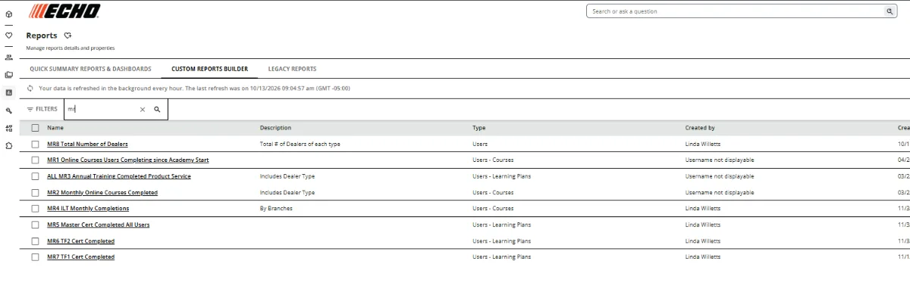
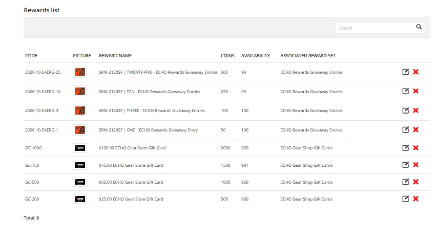
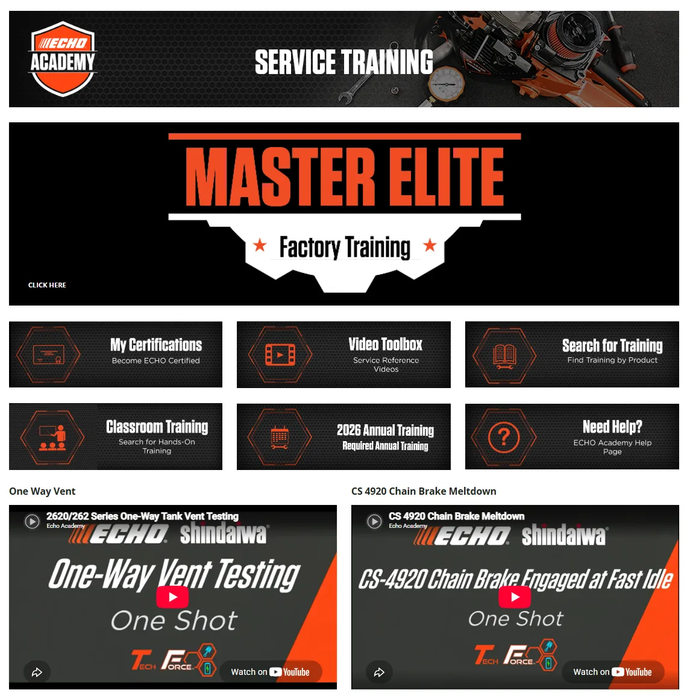
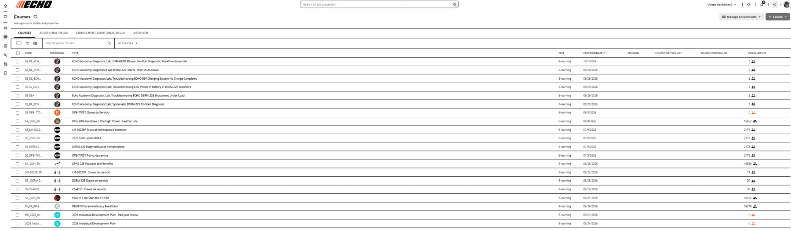

A
Reporting architecture
Custom reporting combines learner, branch, dealer, learning-plan, course and completion data for operational decisions.

Reporting, localization, rewards, navigation and content governance—the smaller decisions that determine whether a learning platform is usable.
Custom reporting combines learner, branch, dealer, learning-plan, course and completion data for operational decisions.

French and Spanish technical learning is maintained as an operational content system serving large learner populations.

Badges, points, reward thresholds and gift-card redemption require both learner-facing design and administrative governance.

Landing pages and service-training environments help learners understand where they are, what they need and what comes next.

A 365-course active portfolio requires naming, lifecycle decisions, audience rules and ongoing maintenance—not just publishing.

Public screenshots intentionally omit learner-list PII. Company trademarks and platform interfaces remain the property of their respective owners.